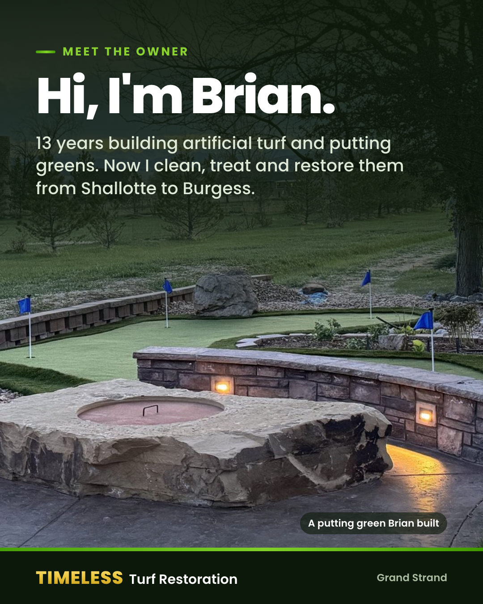
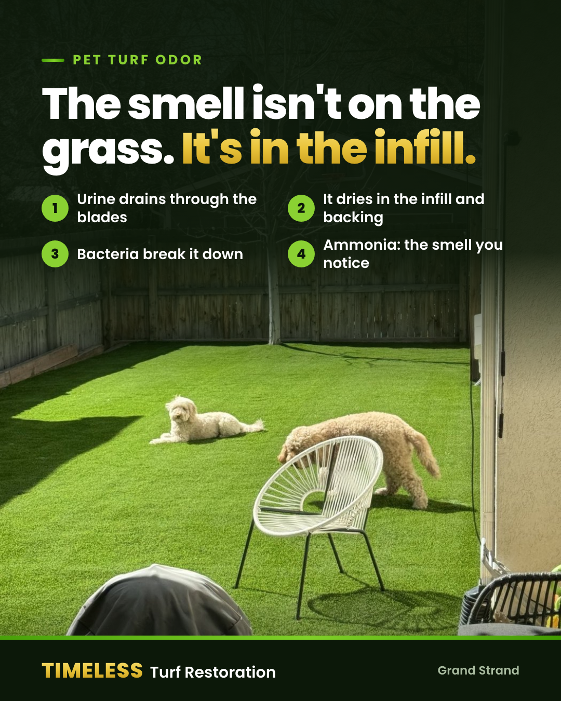
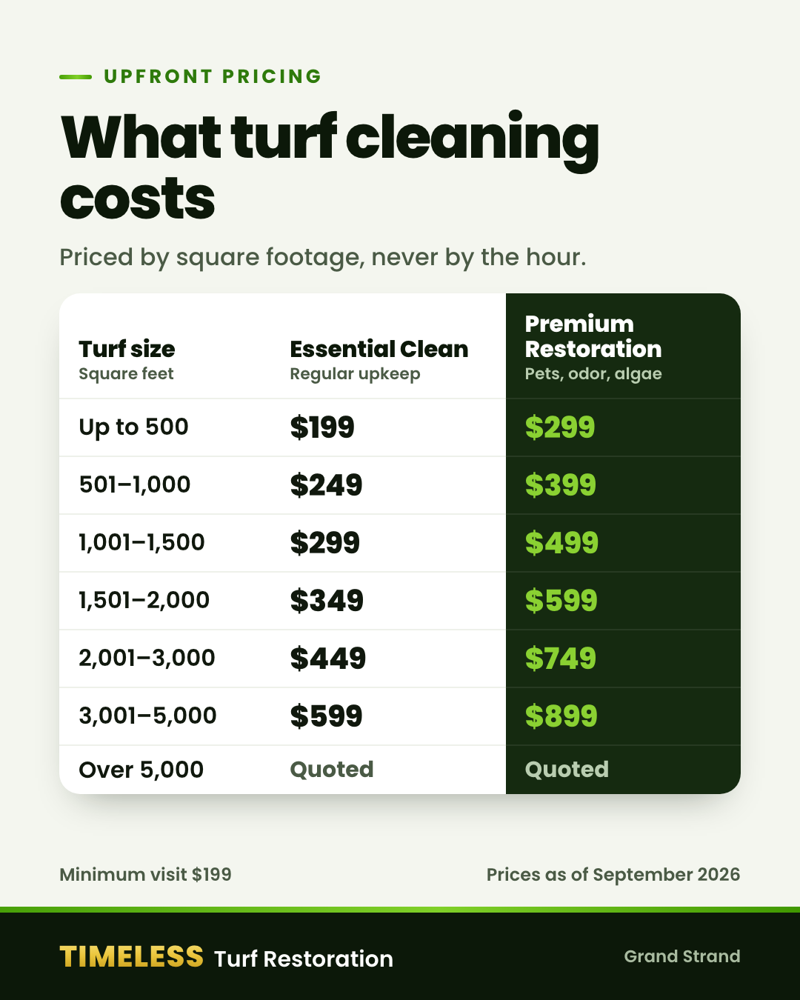

Artificial turf cleaning, pet odor removal & putting green restoration. Shallotte, NC to Burgess, SC.
Call now
Timeless Turf RestorationPost 1 · Meet Brian
Pinned
Hi, I'm Brian, the owner of Timeless Turf Restoration.
I've spent 13 years building artificial turf and putting greens. This company is the other half of that work: cleaning, treating and restoring turf that's already in the ground, from Shallotte, NC to Burgess, SC.
What I do:
• Deep cleaning through the blades, backing and infill
• Pet odor treated at the source, not covered up with fragrance
• Algae and mold treatment for shady, damp spots
• Putting greens brought back to a true roll
• Infill top-ups and seam and edge repairs
Every job is priced by square footage, never by the hour, and I don't leave until it's blown clean.
Call or text 303-349-2368 for a quote. A couple of photos of your turf help me get the price right the first time.
Pictured: a backyard green I built.
#GrandStrand #MyrtleBeach #ArtificialTurf

Timeless Turf RestorationPost 2 · Pet odor
Hosed the turf down and it still smells like dog pee the next morning? Here's why.
The smell isn't on the grass. Urine drains through the blades in seconds and dries in the infill and on the backing underneath. Bacteria break it down into ammonia, and on a humid morning that smell comes right back up.
Why the usual fixes don't last:
• Hosing rinses the surface, leaves the residue, and adds the moisture the bacteria need
• Deodorizer sprays cover the ammonia with fragrance until the fragrance fades
• Vinegar neutralizes a little on top but never reaches the infill
• Bleach lightens the fibers, damages the backing and still leaves the residue
What works is flushing the infill, breaking the residue down with an enzyme treatment, and treating the bacteria with an antimicrobial. That's part of every Premium Restoration.
Got a corner your dog has claimed? Text a photo to 303-349-2368 and I'll tell you what it needs.
#PetTurf #MyrtleBeach #DogOwners

Timeless Turf RestorationPost 3 · Pricing
What does turf cleaning cost? Here's the whole price list, so you don't have to call to find out.
Two levels, priced by the square footage of your turf, never by the hour.
Essential Clean, from $199
Regular upkeep for people-only yards: debris removal, blowing, power brushing, a rinse, basic spot treatment and final grooming.
Premium Restoration, from $299
The deep clean for pet yards, odor, algae and tired, matted turf. It adds pet odor and antimicrobial treatment, algae and mold treatment, infill redistribution, an edge and seam check, and before and after photos.
Want it kept up all year? Memberships with four visits a year start at $89 a month.
Not sure how big your turf is? Text a couple of photos to 303-349-2368 and I'll help you work it out.
Prices as of September 2026. Over 5,000 sq ft is quoted.
#GrandStrand #ArtificialTurf #TurfCleaning

Timeless Turf RestorationPost 4 · Putting greens
Is your backyard green rolling slower than it used to, or pulling putts off line?
On a sand-filled green, the ball rolls on the sand as much as on the fibers. Speed comes from a firm, even bed of sand, rolled flat. Over time:
• Pollen and leaves soften the surface
• Rain washes sand off the high side
• A green that never gets rolled goes bumpy
Slow is usually a dirty surface and thin sand. Bumpy is usually sand that has moved, or a surface that was never compacted. Both come back without new turf.
A putting green restoration means clearing and brushing the green, cleaning the cups and fringe, top-dressing with fresh kiln-dried green sand to an even depth, and rolling it true.
One honest exception: a green that holds water or has a real dip has a base problem, and sand won't fix it. I'll tell you if that's what you've got.
Most home greens need top-dressing once a year, twice under trees or with heavy use. I've built and looked after greens for 13 years. Call or text 303-349-2368.
#PuttingGreen #MyrtleBeach #GolfAtHome
We're in the peak of hurricane season. If a storm leaves sand, salt or branches on your turf, here's the order to handle it. Save this one.
1. Clear branches and heavy debris first
2. Blow off the loose sand and leaves
3. Flush salt spray and blown-in sand down through the infill with fresh water: high volume, low pressure
4. Walk every seam and edge, because standing water can lift them
5. Re-level the infill
Timing matters most. Flushed within a few weeks, salt and sand are a cleaning job. Left through a dry fall, they turn into a crust, and some of the infill may need replacing.
Skip the pressure washer. It blows infill out in stripes and can force water under the seams. A garden hose on a shower setting does more good.
The good news: turf fibers are salt-tolerant, so salt water won't kill the grass itself.
Post-storm cleanups start at $199, anywhere from Shallotte to Burgess. Call or text 303-349-2368.
#HurricaneSeason #GrandStrand #ArtificialTurf